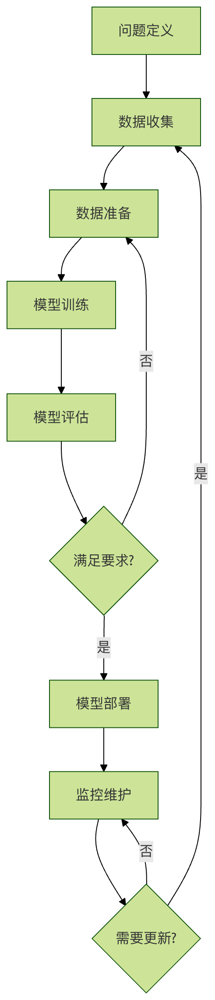

Ciclo de vida de un proyecto de aprendizaje automático
Un proyecto de aprendizaje automático es como construir una casa: requiere un proceso completo que va desde el diseño hasta la construcción y la aceptación final. Cada etapa es crucial e indispensable.
Seis etapas principales del flujo de aprendizaje automático：
- Definición del problema: aclarar qué problema se va a resolver
- Recopilación de datos: obtener datos relevantes
- Preparación de datos: limpiar y preprocesar los datos
- Entrenamiento del modelo: elegir el algoritmo y entrenar el modelo
- Evaluación del modelo: evaluar el rendimiento del modelo
- Implementación del modelo: poner el modelo en producción

Etapa 1: Definición del problema
Definir el problema de negocio
La definición del problema es el punto de partida más importante de un proyecto de aprendizaje automático, igual que es necesario tener claro el destino antes de usar el GPS.
Preguntas clave
¿Qué problema queremos resolver?
- Problema de clasificación: determinar si un correo electrónico es spam
- Problema de regresión: predecir el precio de una vivienda
- Problema de agrupamiento: segmentación de clientes
- Detección de anomalías: detectar fraude con tarjetas de crédito
¿Por qué es importante este problema?
- Valor para el negocio: mejorar la eficiencia, reducir costos, aumentar ingresos
- Valor para el usuario: mejorar la experiencia, ofrecer servicios personalizados
¿Cuál es el criterio de éxito?
- Métricas cuantitativas: alcanzar una precisión superior al 90%
- Métricas de negocio: aumentar la tasa de conversión en un 20%
Ejemplo de definición del problema
Ejemplo
class ProblemDefinition:
def __init__(self):
# Problema de negocio
self.business_problem = "La tasa de conversión de compra de los usuarios es baja; es necesario mejorar la precisión de las recomendaciones"
# Problema técnico
self.technical_problem = "Predecir los productos que un usuario podría comprar basándose en su comportamiento"
# Tipo de problema
self.problem_type = "Sistema de recomendación (clasificación + ranking)"
# Criterios de éxito
self.success_criteria = {
"Aumento de la tasa de clics": "15%",
"Aumento de la tasa de conversión": "10%",
"Precisión de las recomendaciones": "80%"
}
# Restricciones
self.constraints = {
"Tiempo de respuesta": "< 100ms",
"Privacidad de los datos": "Cumplir con los requisitos del GDPR",
"Recursos computacionales": "Configuración actual del servidor"
}
def define_features_and_labels(self):
"""Definir características y etiquetas"""
features = {
"Características del usuario": ["Edad", "Género", "Historial de compras", "Comportamiento de navegación"],
"Características del producto": ["Categoría", "Precio", "Calificación", "Inventario"],
"Características contextuales": ["Tiempo", "Dispositivo", "Ubicación geográfica"]
}
labels = {
"Etiqueta principal": "Si hizo clic",
"Etiqueta secundaria": "Si compró",
"Etiqueta auxiliar": "Tiempo de permanencia"
}
return features, labels
def print_definition(self):
"""Imprimir la definición del problema"""
print("=" * 50)
print("Definición del problema de aprendizaje automático")
print("=" * 50)
print(f"Problema de negocio: {self.business_problem}")
print(f"Problema técnico: {self.technical_problem}")
print(f"Tipo de problema: {self.problem_type}")
print("\nCriterios de éxito:")
for metric, target in self.success_criteria.items():
print(f" {metric}：{target}")
print("\nRestricciones:")
for constraint, limit in self.constraints.items():
print(f" {constraint}：{limit}")
features, labels = self.define_features_and_labels()
print("\nDefinición de características:")
for category, items in features.items():
print(f" {category}：{', '.join(items)}")
print("\nDefinición de etiquetas:")
for label_type, label_name in labels.items():
print(f" {label_type}：{label_name}")
# Ejemplo de uso
problem = ProblemDefinition()
problem.print_definition()
Contenido de salida:
================================================== 机器学习问题定义 ================================================== 业务问题：用户购买转化率低，需要提高推荐精准度 技术问题：基于用户行为预测用户可能购买的商品 问题类型：推荐系统（分类+排序） 成功标准： 点击率提升：15% 转化率提升：10% 推荐准确率：80% 约束条件： 响应时间：< 100ms 数据隐私：符合 GDPR 要求 计算资源：现有服务器配置 特征定义： 用户特征：年龄, 性别, 购买历史, 浏览行为 商品特征：类别, 价格, 评分, 库存 上下文特征：时间, 设备, 地理位置 标签定义： 主要标签：是否点击 次要标签：是否购买 辅助标签：停留时间
Etapa 2: Recopilación de datos
Fuentes de datos
Los datos son el combustible del aprendizaje automático, sin los datos adecuados, incluso el mejor algoritmo no puede funcionar.
Fuentes de datos comunes
- Datos internos: datos comerciales de la empresa, datos de comportamiento del usuario
- Datos externos: conjuntos de datos públicos, servicios de datos de terceros
- Web scraping: datos de páginas web, datos de redes sociales
- Datos de sensores: dispositivos IoT, sistemas de monitoreo
Ejemplo de recopilación de datos
Ejemplo
import pandas as pd
import numpy as np
from datetime import datetime, timedelta
class DataCollector:
def __init__(self):
self.collected_data = {}
def collect_user_data(self, n_users=1000):
"""Recopilar datos de usuarios"""
np.random.seed(42)
user_data = {
'user_id': range(1, n_users + 1),
'age': np.random.randint(18, 65, n_users),
'gender': np.random.choice(['Masculino', 'Femenino'], n_users),
'city': np.random.choice(['Pekín', 'Shanghái', 'Cantón', 'Shenzhen'], n_users),
'registration_date': [
datetime.now() - timedelta(days=np.random.randint(1, 365))
for _ in range(n_users)
]
}
self.collected_data['users'] = pd.DataFrame(user_data)
print(f"Se recopilaron {len(user_data['user_id'])} registros de datos de usuario")
return self.collected_data['users']
def collect_behavior_data(self, n_behaviors=5000):
"""Recopilar datos de comportamiento del usuario"""
np.random.seed(42)
user_ids = np.random.choice(range(1, 1001), n_behaviors)
product_ids = np.random.choice(range(1, 501), n_behaviors)
behavior_data = {
'behavior_id': range(1, n_behaviors + 1),
'user_id': user_ids,
'product_id': product_ids,
'behavior_type': np.random.choice(
['Ver', 'Clic', 'Agregar al carrito', 'Comprar'], n_behaviors,
p=[0.4, 0.3, 0.2, 0.1]
),
'timestamp': [
datetime.now() - timedelta(minutes=np.random.randint(1, 10080))
for _ in range(n_behaviors)
],
'duration': np.random.exponential(30, n_behaviors) # Tiempo de permanencia (segundos)
}
self.collected_data['behaviors'] = pd.DataFrame(behavior_data)
print(f"Se recopilaron {len(behavior_data['behavior_id'])} registros de datos de comportamiento")
return self.collected_data['behaviors']
def collect_product_data(self, n_products=500):
"""Recopilar datos de productos"""
np.random.seed(42)
categories = ['Electrónicos', 'Ropa', 'Alimentos', 'Hogar', 'Libros']
product_data = {
'product_id': range(1, n_products + 1),
'category': np.random.choice(categories, n_products),
'price': np.random.uniform(10, 1000, n_products),
'rating': np.random.uniform(3.0, 5.0, n_products),
'stock': np.random.randint(0, 1000, n_products)
}
self.collected_data['products'] = pd.DataFrame(product_data)
print(f"Se recopilaron {len(product_data['product_id'])} registros de datos de productos")
return self.collected_data['products']
def get_data_summary(self):
"""Obtener el resumen de los datos"""
print("\nResumen de la recopilación de datos:")
for name, df in self.collected_data.items():
print(f"\n{name} Conjunto de datos:")
print(f" Forma: {df.shape}")
print(f" Nombres de columnas: {list(df.columns)}")
print(f" Valores faltantes: {df.isnull().sum().sum()}")
print(f" Datos de ejemplo:")
print(df.head(2))
# Ejemplo de uso
collector = DataCollector()
collector.collect_user_data()
collector.collect_behavior_data()
collector.collect_product_data()
collector.get_data_summary()
Etapa 3: Preparación de datos
Importancia de la preparación de datos
La preparación de datos representa del 60 al 80% del tiempo en un proyecto de aprendizaje automático, es igual de importante que los preparativos antes de cocinar.
Principales tareas de la preparación de datos
- Limpieza de datos: manejar valores faltantes, valores atípicos y valores duplicados
- Ingeniería de características: crear nuevas características, seleccionar características importantes
- Transformación de datos: estandarización, normalización, codificación
- División de datos: conjunto de entrenamiento, conjunto de validación, conjunto de prueba
Ejemplo de preparación de datos
Ejemplo
import pandas as pd
import numpy as np
from sklearn.preprocessing import StandardScaler, LabelEncoder
from sklearn.model_selection import train_test_split
class DataPreparer:
def __init__(self, data):
self.data = data.copy()
self.processed_data = None
def clean_data(self):
"""Limpieza de datos"""
print("Comenzando la limpieza de datos...")
# 1. Manejar valores faltantes
print(f"Cantidad de valores faltantes antes del procesamiento: {self.data.isnull().sum().sum()}")
# Las columnas numéricas se rellenan con la media
numeric_columns = self.data.select_dtypes(include=[np.number]).columns
for col in numeric_columns:
if self.data[col].isnull().sum() > 0:
self.data[col].fillna(self.data[col].mean(), inplace=True)
# Las columnas categóricas se rellenan con la moda
categorical_columns = self.data.select_dtypes(include=['object']).columns
for col in categorical_columns:
if self.data[col].isnull().sum() > 0:
mode_val = self.data[col].mode()[0]
self.data[col].fillna(mode_val, inplace=True)
print(f"Cantidad de valores faltantes después del procesamiento: {self.data.isnull().sum().sum()}")
# 2. Manejar valores duplicados
duplicates_before = self.data.duplicated().sum()
self.data.drop_duplicates(inplace=True)
duplicates_after = self.data.duplicated().sum()
print(f"Valores duplicados eliminados: {duplicates_before - duplicates_after}")
# 3. Manejar valores atípicos (método simple: usar IQR)
for col in numeric_columns:
Q1 = self.data[col].quantile(0.25)
Q3 = self.data[col].quantile(0.75)
IQR = Q3 - Q1
lower_bound = Q1 - 1.5 * IQR
upper_bound = Q3 + 1.5 * IQR
outliers = ((self.data[col] < lower_bound) |
(self.data[col] > upper_bound)).sum()
if outliers > 0:
# Reemplazar los valores atípicos con el valor límite
self.data[col] = self.data[col].clip(lower_bound, upper_bound)
print(f"Procesando {outliers} valores atípicos en la columna {col}")
return self.data
def feature_engineering(self):
"""Ingeniería de características"""
print("\nComenzando la ingeniería de características...")
# 1. Crear nuevas características (ejemplo)
if 'price' in self.data.columns and 'rating' in self.data.columns:
# Crear la característica de relación calidad-precio
self.data['price_per_rating'] = self.data['price'] / self.data['rating']
print("Crear nueva característica: price_per_rating")
# 2. Selección de características (ejemplo simple: eliminar características de baja varianza)
numeric_columns = self.data.select_dtypes(include=[np.number]).columns
low_variance_features = []
for col in numeric_columns:
if self.data[col].var() < 0.01: # Umbral de varianza
low_variance_features.append(col)
if low_variance_features:
self.data.drop(columns=low_variance_features, inplace=True)
print(f"Eliminar características de baja varianza: {low_variance_features}")
return self.data
def transform_data(self):
"""Transformación de datos"""
print("\nComenzar transformación de datos...")
# 1. Codificar variables categóricas
categorical_columns = self.data.select_dtypes(include=['object']).columns
label_encoders = {}
for col in categorical_columns:
le = LabelEncoder()
self.data[col] = le.fit_transform(self.data[col])
label_encoders[col] = le
print(f"Codificar variables categóricas: {col}")
# 2. Estandarizar variables numéricas
numeric_columns = self.data.select_dtypes(include=[np.number]).columns
scaler = StandardScaler()
if len(numeric_columns) > 0:
self.data[numeric_columns] = scaler.fit_transform(self.data[numeric_columns])
print(f"Estandarizar variables numéricas: {list(numeric_columns)}")
return self.data, label_encoders, scaler
def split_data(self, target_column, test_size=0.2, val_size=0.2):
"""División de datos"""
print(f"\nComenzar división de datos (proporción de prueba: {test_size}, proporción de validación: {val_size})...")
X = self.data.drop(columns=[target_column])
y = self.data[target_column]
# Primero separar el conjunto de prueba
X_temp, X_test, y_temp, y_test = train_test_split(
X, y, test_size=test_size, random_state=42
)
# Luego separar el conjunto de validación de los datos restantes
val_size_adjusted = val_size / (1 - test_size)
X_train, X_val, y_train, y_val = train_test_split(
X_temp, y_temp, test_size=val_size_adjusted, random_state=42
)
print(f"Tamaño del conjunto de entrenamiento: {X_train.shape)
print(f"Tamaño del conjunto de validación: {X_val.shape)
print(f"Tamaño del conjunto de prueba: {X_test.shape)
return {
'X_train': X_train, 'y_train': y_train,
'X_val': X_val, 'y_val': y_val,
'X_test': X_test, 'y_test': y_test
}
def prepare_pipeline(self, target_column):
"""Pipeline completo de preparación de datos"""
print("=" * 50)
print("Pipeline de preparación de datos")
print("=" * 50)
# 1. Limpieza de datos
self.clean_data()
# 2. Ingeniería de características
self.feature_engineering()
# 3. Transformación de datos
processed_data, encoders, scaler = self.transform_data()
# 4. División de datos
splits = self.split_data(target_column)
self.processed_data = processed_data
return splits, encoders, scaler
# Crear datos de ejemplo y demostrar la preparación de datos
np.random.seed(42)
sample_data = pd.DataFrame({
'age': np.random.randint(18, 65, 1000),
'income': np.random.normal(50000, 15000, 1000),
'gender': np.random.choice(['Hombre', 'Mujer'], 1000),
'city': np.random.choice(['Beijing', 'Shanghái', 'Guangzhou'], 1000),
'target': np.random.choice([0, 1], 1000)
})
# Agregar algunos valores faltantes y valores atípicos
sample_data.loc[np.random.choice(1000, 50), 'income'] = np.nan
sample_data.loc[np.random.choice(1000, 20), 'age'] = np.random.randint(100, 150)
preparer = DataPreparer(sample_data)
splits, encoders, scaler = preparer.prepare_pipeline('target')
Etapa 4: Entrenamiento del modelo
Estrategia de selección del modelo
Elegir el modelo adecuado es clave para el éxito, como elegir la herramienta adecuada para el trabajo.
Factores a considerar en la selección de modelos
- Tipo de problema: clasificación, regresión, agrupamiento, etc.
- Características de los datos: volumen de datos, número de características, tipo de datos
- Requisitos de rendimiento: exactitud, velocidad, interpretabilidad
- Restricciones de recursos: recursos computacionales, limitaciones de tiempo
Ejemplo de entrenamiento del modelo
Ejemplo
from sklearn.linear_model import LogisticRegression, LinearRegression
from sklearn.ensemble import RandomForestClassifier, RandomForestRegressor
from sklearn.svm import SVC, SVR
from sklearn.metrics import accuracy_score, mean_squared_error, classification_report
class ModelTrainer:
def __init__(self):
self.models = {}
self.trained_models = {}
def register_model(self, name, model, problem_type):
"""Registrar modelo"""
self.models[name] = {
'model': model,
'problem_type': problem_type
}
print(f"Registrar modelo: {name} ({problem_type})")
def train_single_model(self, name, X_train, y_train):
"""Entrenar modelo individual"""
if name not in self.models:
raise ValueError(f"El modelo {name} no está registrado")
model_info = self.models[name]
model = model_info['model']
print(f"\nEntrenar modelo: {name}")
model.fit(X_train, y_train)
self.trained_models[name] = model
print(f"Entrenamiento del modelo {name} completado")
return model
def train_all_models(self, X_train, y_train):
"""Entrenar todos los modelos registrados"""
print("\nComenzar entrenamiento de todos los modelos...")
for name in self.models.keys():
try:
self.train_single_model(name, X_train, y_train)
except Exception as e:
print(f"Error al entrenar el modelo {name}: {e}")
return self.trained_models
def evaluate_models(self, X_test, y_test):
"""Evaluar todos los modelos entrenados"""
print("\nResultados de evaluación de modelos:")
print("-" * 50)
results = {}
for name, model in self.trained_models.items():
problem_type = self.models[name]['problem_type']
# Predicción
y_pred = model.predict(X_test)
# Seleccionar métricas de evaluación según el tipo de problema
if problem_type == 'classification':
accuracy = accuracy_score(y_test, y_pred)
results[name] = {'accuracy': accuracy}
print(f"{name}: exactitud = {accuracy:.4f}")
# Informe detallado
print(classification_report(y_test, y_pred))
elif problem_type == 'regression':
mse = mean_squared_error(y_test, y_pred)
rmse = np.sqrt(mse)
results[name] = {'mse': mse, 'rmse': rmse}
print(f"{name}: MSE = {mse:.4f}, RMSE = {rmse:.4f}")
print("-" * 50)
return results
def get_best_model(self, results, metric='accuracy'):
"""Obtener el mejor modelo"""
if not results:
return None
best_model_name = max(results.keys(), key=lambda x: results[x].get(metric, 0))
best_score = results[best_model_name][metric]
print(f"\nMejor modelo: {best_model_name} ({metric} = {best_score:.4f})")
return best_model_name, self.trained_models[best_model_name]
# Ejemplo de uso
trainer = ModelTrainer()
# Registrar diferentes tipos de modelos
trainer.register_model('Regresión logística', LogisticRegression(random_state=42), 'classification')
trainer.register_model('Bosque aleatorio', RandomForestClassifier(n_estimators=100, random_state=42), 'classification')
trainer.register_model('Máquina de vectores de soporte', SVC(random_state=42), 'classification')
# Crear datos de entrenamiento
X_train = splits['X_train']
y_train = splits['y_train']
X_test = splits['X_test']
y_test = splits['y_test']
# Entrenar todos los modelos
trained_models = trainer.train_all_models(X_train, y_train)
# Evaluar modelos
results = trainer.evaluate_models(X_test, y_test)
# Obtener el mejor modelo
best_name, best_model = trainer.get_best_model(results)
Etapa 5: Evaluación del modelo
Selección de métricas de evaluación
Elegir las métricas de evaluación adecuadas es como elegir la regla adecuada, diferentes métricas son adecuadas para diferentes escenarios.
Métricas de evaluación comunes
Problemas de clasificación：
- Exactitud (Accuracy): proporción de predicciones correctas
- Precisión (Precision): proporción de muestras predichas como positivas que realmente son positivas
- Recuperación (Recall): proporción de muestras realmente positivas que se predijeron correctamente como positivas
- Puntuación F1: media armónica de precisión y recuperación
Problemas de regresión：
- Error cuadrático medio (MSE): promedio de los cuadrados de las diferencias entre los valores predichos y los reales
- Raíz del error cuadrático medio (RMSE): raíz cuadrada del MSE
- Error absoluto medio (MAE): promedio de los valores absolutos de las diferencias entre los valores predichos y los reales
- Puntuación R²: proporción de varianza explicada por el modelo
Ejemplo de evaluación del modelo
Ejemplo
import matplotlib.pyplot as plt
from sklearn.metrics import (
accuracy_score, precision_score, recall_score, f1_score,
confusion_matrix, roc_curve, auc
)
class ModelEvaluator:
def __init__(self):
self.evaluation_results = {}
def evaluate_classification(self, y_true, y_pred, y_prob=None, model_name="Model"):
"""Evaluar modelo de clasificación"""
results = {}
# Métricas básicas
results['accuracy'] = accuracy_score(y_true, y_pred)
results['precision'] = precision_score(y_true, y_pred, average='weighted')
results['recall'] = recall_score(y_true, y_pred, average='weighted')
results['f1'] = f1_score(y_true, y_pred, average='weighted')
print(f"\nResultados de evaluación de clasificación de {model_name}:")
print(f"Exactitud: {results['accuracy']:.4f}")
print(f"Precisión: {results['precision']:.4f}")
print(f"Recuperación: {results['recall']:.4f}")
print(f"Puntuación F1: {results['f1']:.4f}")
# Matriz de confusión
cm = confusion_matrix(y_true, y_pred)
print(f"\nMatriz de confusión:")
print(cm)
# Curva ROC (si hay predicciones de probabilidad)
if y_prob is not None and len(np.unique(y_true)) == 2:
fpr, tpr, thresholds = roc_curve(y_true, y_prob[:, 1])
roc_auc = auc(fpr, tpr)
results['roc_auc'] = roc_auc
# Dibujar la curva ROC
plt.figure(figsize=(8, 6))
plt.plot(fpr, tpr, color='darkorange', lw=2,
label=f'Curva ROC (AUC = {roc_auc:.2f})')
plt.plot([0, 1], [0, 1], color='navy', lw=2, linestyle='--')
plt.xlim([0.0, 1.0])
plt.ylim([0.0, 1.05])
plt.xlabel('Tasa de falsos positivos')
plt.ylabel('Tasa de verdaderos positivos')
plt.title(f'Curva ROC de {model_name}')
plt.legend(loc="lower right")
plt.grid(True)
plt.show()
self.evaluation_results[model_name] = results
return results
def evaluate_regression(self, y_true, y_pred, model_name="Model"):
"""Evaluar modelo de regresión"""
results = {}
# Métricas básicas
mse = np.mean((y_true - y_pred) ** 2)
rmse = np.sqrt(mse)
mae = np.mean(np.abs(y_true - y_pred))
# Puntuación R²
ss_res = np.sum((y_true - y_pred) ** 2)
ss_tot = np.sum((y_true - np.mean(y_true)) ** 2)
r2 = 1 - (ss_res / ss_tot)
results['mse'] = mse
results['rmse'] = rmse
results['mae'] = mae
results['r2'] = r2
print(f"\nResultados de evaluación de regresión de {model_name}:")
print(f"Error cuadrático medio (MSE): {mse:.4f}")
print(f"Raíz del error cuadrático medio (RMSE): {rmse:.4f}")
print(f"Error absoluto medio (MAE): {mae:.4f}")
print(f"Puntuación R²: {r2:.4f}")
# Dibujar predicción vs. valor real
plt.figure(figsize=(8, 6))
plt.scatter(y_true, y_pred, alpha=0.6)
plt.plot([y_true.min(), y_true.max()], [y_true.min(), y_true.max()],
'r--', lw=2)
plt.xlabel('Valor real')
plt.ylabel('Valor predicho')
plt.title(f'{model_name} predicción vs. valor real')
plt.grid(True)
plt.show()
self.evaluation_results[model_name] = results
return results
def compare_models(self):
"""Comparar todos los modelos evaluados"""
if not self.evaluation_results:
print("No hay resultados de evaluación de modelos para comparar")
return
print("\nComparación de modelos:")
print("-" * 50)
# Crear tabla comparativa
comparison_data = []
for model_name, results in self.evaluation_results.items():
row = [model_name]
for metric, value in results.items():
row.append(f"{value:.4f}")
comparison_data.append(row)
# Imprimir tabla
headers = ["Nombre del modelo"] + list(self.evaluation_results.values())[0].keys()
print("\t".join(headers))
for row in comparison_data:
print("\t".join(row))
# Ejemplo de uso
evaluator = ModelEvaluator()
# Evaluar modelo de clasificación
y_pred_class = best_model.predict(X_test)
y_prob_class = best_model.predict_proba(X_test)
evaluator.evaluate_classification(y_test, y_pred_class, y_prob_class, "Mejor modelo de clasificación")
# Comparar todos los modelos
evaluator.compare_models()
Etapa 6: Implementación del modelo
Estrategia de implementación
El despliegue de modelos es el proceso de poner un modelo en uso práctico, como llevar un producto desarrollado al mercado.
Formas de despliegue
- Predicción por lotes: procesar grandes volúmenes de datos periódicamente
- Predicción en tiempo real: servicio en línea, respuesta inmediata
- Despliegue integrado: integrar el modelo en sistemas existentes
- Despliegue en el borde: ejecutar el modelo en el dispositivo
Ejemplo de implementación del modelo
Ejemplo
import pickle
import json
from datetime import datetime
class ModelDeployer:
def __init__(self):
self.deployed_models = {}
self.deployment_logs = []
def save_model(self, model, model_name, filepath=None):
"""Guardar modelo"""
if filepath is None:
filepath = f"{model_name}.pkl"
with open(filepath, 'wb') as f:
pickle.dump(model, f)
print(f"El modelo {model_name} se ha guardado en {filepath}")
# Registrar log de despliegue
log_entry = {
'timestamp': datetime.now().isoformat(),
'action': 'save_model',
'model_name': model_name,
'filepath': filepath
}
self.deployment_logs.append(log_entry)
return filepath
def load_model(self, model_name, filepath):
"""Cargar modelo"""
with open(filepath, 'rb') as f:
model = pickle.load(f)
self.deployed_models[model_name] = model
print(f"El modelo {model_name} se ha cargado desde {filepath}")
# Registrar log de despliegue
log_entry = {
'timestamp': datetime.now().isoformat(),
'action': 'load_model',
'model_name': model_name,
'filepath': filepath
}
self.deployment_logs.append(log_entry)
return model
def create_prediction_service(self, model_name, encoders=None, scaler=None):
"""Crear servicio de predicción"""
if model_name not in self.deployed_models:
raise ValueError(f"El modelo {model_name} no está desplegado")
model = self.deployed_models[model_name]
def predict_service(input_data):
"""Función del servicio de predicción"""
try:
# Preprocesamiento de datos
if encoders:
for col, encoder in encoders.items():
if col in input_data.columns:
input_data[col] = encoder.transform(input_data[col])
if scaler:
numeric_cols = input_data.select_dtypes(include=['number']).columns
input_data[numeric_cols] = scaler.transform(input_data[numeric_cols])
# Predicción
prediction = model.predict(input_data)
# Si es un modelo de clasificación, también devolver probabilidades
if hasattr(model, 'predict_proba'):
probability = model.predict_proba(input_data)
return {
'prediction': prediction.tolist(),
'probability': probability.tolist(),
'status': 'success',
'timestamp': datetime.now().isoformat()
}
else:
return {
'prediction': prediction.tolist(),
'status': 'success',
'timestamp': datetime.now().isoformat()
}
except Exception as e:
return {
'error': str(e),
'status': 'error',
'timestamp': datetime.now().isoformat()
}
# Registrar log de creación del servicio
log_entry = {
'timestamp': datetime.now().isoformat(),
'action': 'create_service',
'model_name': model_name
}
self.deployment_logs.append(log_entry)
return predict_service
def monitor_model(self, model_name, input_data, true_labels=None):
"""Monitorear el rendimiento del modelo"""
if model_name not in self.deployed_models:
raise ValueError(f"El modelo {model_name} no está desplegado")
predict_service = self.create_prediction_service(model_name)
# Obtener resultados de predicción
result = predict_service(input_data)
# Información de monitoreo
monitoring_info = {
'timestamp': datetime.now().isoformat(),
'model_name': model_name,
'input_shape': input_data.shape,
'prediction_count': len(result.get('prediction', [])),
'status': result.get('status', 'unknown')
}
# Si hay etiquetas reales, calcular métricas de rendimiento
if true_labels is not None and 'prediction' in result:
predictions = result['prediction']
if len(predictions) == len(true_labels):
accuracy = accuracy_score(true_labels, predictions)
monitoring_info['accuracy'] = accuracy
print("Información de monitoreo del modelo:")
for key, value in monitoring_info.items():
print(f" {key}: {value}")
return monitoring_info
def get_deployment_logs(self):
"""Obtener logs de despliegue"""
return self.deployment_logs
# Ejemplo de uso
deployer = ModelDeployer()
# Guardar el mejor modelo
model_path = deployer.save_model(best_model, "best_classification_model")
# Cargar modelo
deployer.load_model("best_classification_model", model_path)
# Crear servicio de predicción
prediction_service = deployer.create_prediction_service(
"best_classification_model", encoders, scaler
)
# Usar el servicio de predicción
test_input = X_test.head(5)
prediction_result = prediction_service(test_input)
print("\nResultado de la predicción:")
print(json.dumps(prediction_result, indent=2, ensure_ascii=False))
# Monitorear el modelo
deployer.monitor_model("best_classification_model", test_input, y_test.head(5).values)
Ejemplo de flujo completo
Ejemplo
class MLProjectPipeline:
def __init__(self):
self.data_collector = DataCollector()
self.data_preparer = None
self.model_trainer = ModelTrainer()
self.model_evaluator = ModelEvaluator()
self.model_deployer = ModelDeployer()
def run_complete_pipeline(self, target_column):
"""Ejecutar el pipeline completo de aprendizaje automático"""
print("=" * 60)
print("Flujo de trabajo completo del proyecto de aprendizaje automático")
print("=" * 60)
# 1. Recopilación de datos
print("\nPaso 1: Recopilación de datos")
print("-" * 30)
user_data = self.data_collector.collect_user_data(1000)
behavior_data = self.data_collector.collect_behavior_data(5000)
# Combinar datos (ejemplo simplificado)
merged_data = pd.merge(user_data, behavior_data, on='user_id', how='inner')
# Crear la variable objetivo (ejemplo: si compró)
merged_data['purchased'] = (merged_data['behavior_type'] == 'Compra').astype(int)
# 2. Preparación de datos
print("\nPaso 2: Preparación de datos")
print("-" * 30)
# Seleccionar columnas de características
feature_columns = ['age', 'gender', 'city', 'duration']
if all(col in merged_data.columns for col in feature_columns):
data_for_ml = merged_data[feature_columns + ['purchased']].copy()
# Manejar variables categóricas
data_for_ml['gender'] = data_for_ml['gender'].map({'Masculino': 0, 'Femenino': 1})
data_for_ml['city'] = data_for_ml['city'].map({'Pekín': 0, 'Shanghái': 1, 'Guangzhou': 2})
# Preparación de datos
self.data_preparer = DataPreparer(data_for_ml)
splits, encoders, scaler = self.data_preparer.prepare_pipeline('purchased')
# 3. Entrenamiento del modelo
print("\nPaso 3: Entrenamiento del modelo")
print("-" * 30)
# Registrar el modelo
self.model_trainer.register_model(
'Regresión logística', LogisticRegression(random_state=42), 'classification'
)
self.model_trainer.register_model(
'Bosque aleatorio', RandomForestClassifier(n_estimators=100, random_state=42), 'classification'
)
# Entrenar el modelo
trained_models = self.model_trainer.train_all_models(
splits['X_train'], splits['y_train']
)
# 4. Evaluación del modelo
print("\nPaso 4: Evaluación del modelo")
print("-" * 30)
results = self.model_trainer.evaluate_models(
splits['X_test'], splits['y_test']
)
best_name, best_model = self.model_trainer.get_best_model(results)
# 5. Despliegue del modelo
print("\nPaso 5: Despliegue del modelo")
print("-" * 30)
# Guardar el modelo
model_path = self.model_deployer.save_model(best_model, "production_model")
# Crear el servicio de predicción
prediction_service = self.model_deployer.create_prediction_service(
"production_model"
)
# Probar el servicio de predicción
test_input = splits['X_test'].head(3)
prediction_result = prediction_service(test_input)
print("\nResultado de la prueba del servicio de predicción:")
print(json.dumps(prediction_result, indent=2, ensure_ascii=False))
print("\n" + "=" * 60)
print("¡Flujo de trabajo del proyecto de aprendizaje automático completado!")
print("=" * 60)
return {
'data': data_for_ml,
'splits': splits,
'best_model': best_model,
'best_model_name': best_name,
'evaluation_results': results,
'prediction_service': prediction_service
}
else:
print("Las columnas de datos están incompletas, no se puede continuar con el proceso")
return None
# Ejecutar el flujo de trabajo completo
pipeline = MLProjectPipeline()
project_results = pipeline.run_complete_pipeline('purchased')
Haz clic para compartir notas
<p style="font-size:14px;">¡La nota debe ser una extensión del contenido de este artículo!</p><br> <p style="font-size:12px;"><a href="../tougao.html" target="_blank">Envío de artículos, haz clic aquí</a></p> <p style="font-size:14px;"><a href="../w3cnote/runoob-user-test-intro.html" target="_blank">Cómo obtener el código de invitación de registro</a></p> <h3 class="text-muted"><i class="fa fa-info-circle" aria-hidden="true"></i> ¡Antes de compartir notas, debes<a href=";.html" class="runoob-pop">Iniciar sesión</a>!</h3> <p><a href="../w3cnote/runoob-user-test-intro.html" target="_blank">Cómo obtener el código de invitación de registro</a></p>